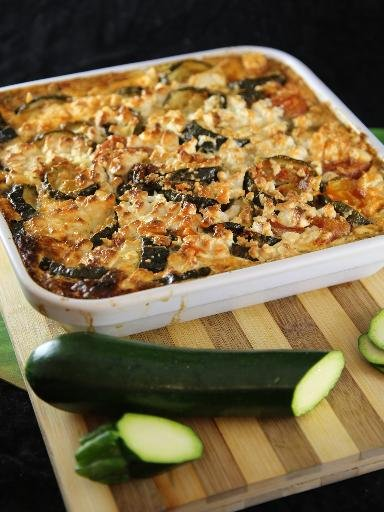

Gratin courgettes tomates feta
Ingrédients
4×
- 1 kg de courgettes
- 1 oignon
- 1 gousse d'ail
- 500 g de tomates pelées
- 2 oeufs
- 4 c. à s. de crème fraîche
- 20 cl de lait
- 200 g de feta
- origan

Préparation
Étape 1
Laver et couper en rondelles 1 kg de courgettes. Les blanchir 6 à 7min à l’eau bouillante salée et les égoutter encore croquantes.
Étape 2
Hacher 1 oignon et le rissoler dans une sauteuse. Ajouter 1 gousse d'ail, les courgettes et 500 g de tomates pelées égouttées, laisser compoter 20min.
Étape 3
Huiler un plat et y verser les légumes. Fouetter 2 oeufs, 4 c. à s. de crème fraîche et 20 cl de lait, saler, poivrer et verser sur les légumes.
Étape 4
Émietter 200 g de feta par-dessus et saupoudrer d’origan.
Étape 5
Cuire 15min à 180ºC puis gratiner 5min à 200ºC.
Résumé
1 kg de courgettes
couper en rondelles blanchir
1 oignon
1 gousse d'ail
500 g de tomates pelées
Hacher rissoler laisser compoter
2 oeufs
4 c. à s. de crème fraîche
20 cl de lait
Fouetter
200 g de feta
origan
Émietter
Cuire 180ºC gratiner 200ºC